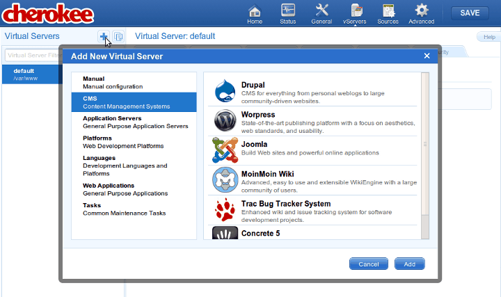

# apt-get install python-django python-flup
Django is a fantastic high-level Python Web framework that can run nicely with Cherokee and either the SCGI or FastCGI handlers.
To properly set up Cherokee to use Django you will need a working Django framework, which is not difficult at all to get ready. The details vary from system to system. You can refer to the official project’s documentation for more information on how to install Django.
There are two ways to deploy a Django project running on Cherokee. The first one is the classical method and involves the usage of Flup, it is the method documented in this recipe and has been the standard method for years. Thousands of sites currently use this approach successfully.
The other method involves using uWSGI. It is a new, modern and feature-rich approach. There is a separate recipe and wizard for that, so check it out. We can assure you it will be worth your time. The instructions on how to set up the Framework are the same, but the method in which Cherokee is configured varies.
There is a screencast available at the Cherokee-Project website to demonstrate how easy it is to use the Django wizard.
Django wizard

Preparing the framework
On Debian based systems this will be enough:
You will need Flup because it implements the standard interface between Python Web applications and Web servers, so you will be using it to run your web application either as FastCGI or SCGI.
Once you are done with that, you must deploy your Django project:
$ cd /var/www $ django-admin startproject example
This will create the basic structure into a new directory called example.
It is important to ensure that manage.py has execution permissions. If it does not, you will only have to set them by running:
chmod a+rx manage.py
Now you are ready to configure Cherokee.
Preparing Cherokee
You can either do it by hand, or you can use the appropriate wizard for a hassle-free configuration.
To do so, simply access the Virtual Servers section in Cherokee-Admin, and click on the Add button at the top of the panel to show the list of available wizards. Django is located under the Platforms category. You can use this wizard both within your Virtual Servers list (in which case a new virtual server is configured), and from the Rule Management button on the Behavior tab inside one of your virtual servers. In this last scenario, the Django project will be accessible under the specified web directory of the selected virtual server.

Wizards
Simply fill in the required fields. Project Directory applies to the path where your Django application is located, while Document Root applies to the directory that contains non-Django related files, such as any static content.
That’s it. You can stop reading now. Go enjoy your Django application running on Cherokee.
Setting up Cherokee by hand
The following information details the steps needed to configure Cherokee by hand, which is not the recommended option. The wizards are constantly being updated as new releases of the software become available, while the recipe might become somehow more outdated given enough time.
It is not difficult, though. You only need to know how to spawn the FastCGI or SCGI, which is done with a script provided by your project called manage.py.
Django can be run on a TCP port or on a Unix socket. In our example we will be launching it as threaded server on a TCP port with SCGI protocol. This is accomplished with the following command, which is what we will have to set up in cherokee-admin.
./manage.py runfcgi method=threaded host=127.0.0.1 port=3033 protocol=scgi
The process is fairly simple. Set up a new rule for this new path and manage it with the SCGI handler. If you wanted to use the FastCGI handler instead you would only have to omit the last parameter and FastCGI would be used by default. The configuration of the handler is exactly the same for SCGI and FastCGI.
Once you have created the new rule for your /var/www/example directory, choose the desired handler and use the following configuration.
Common CGI options
Under Common CGI options make sure to check the Error handler box and uncheck Check file. This is to prevent possible errors with the INFO_PATH generation that can happen when an application, in this case Django, manages the whole subtree. This is mentioned in the Common CGI section of the documentation. It is a good idea to enable the Error handler checkbox since it will help you determine if an error is associated with your Django application or with Cherokee. This, however, is not required.
SCGI handler
SCGI specific
Under SCGI specific make sure to add the hosts providing the service. This is done by adding one or more information sources.
Django information source
Note that you will have to manually launch the spawner if you use a Remote host as Information source instead of a Local interpreter.
You will simply have to add as many sources as needed, for instance our example uses one nicknamed django1, created as local interpreter with these parameters on port 3033.
| Host | Interpreter |
|---|---|
localhost:3033 |
/var/www/example/manage.py runfcgi method=threaded ` \ `host=127.0.0.1 port=3033 protocol=scgi |
You can set up as many hosts as desired and Cherokee will balance the load among them.
Once everything is done you can check if Django is really working. Just navigate to the path configured by your rule, http://localhost/example for instance, and you should see some notes about your recently created project.
It worked!